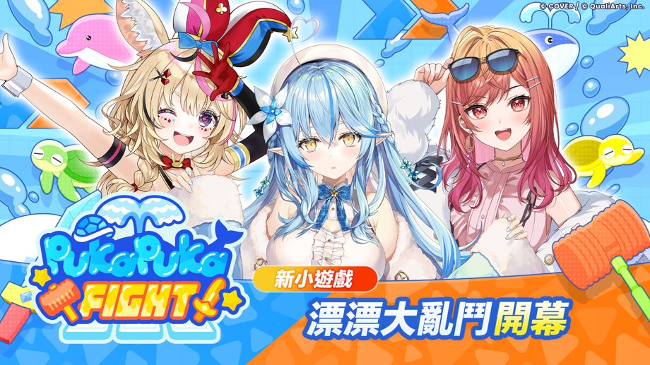
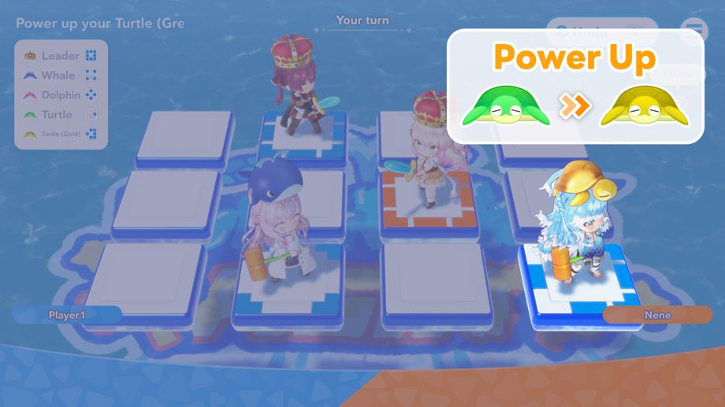

全新小遊戲「漂漂大亂鬥」，將於2026-11-25 11:00:00登場！
◆小遊戲新增日期
2026-11-25 11:00:00～
◆參加條件
過關區域關卡「漂漂大亂鬥開戰！」
※過關主線關卡3章「汽水泡泡灣」，即可解鎖區域關卡「漂漂大亂鬥開戰！」。
※於多人遊玩的私人房間中，只要過關主線關卡1章4話「Mythical Connection」後即可遊玩。
全新小遊戲「漂漂大亂鬥」說明

漂漂大亂鬥是移動holo成員，讓對方隊長落水即可獲勝的小遊戲。
讓對方隊長以外的holo成員落水，即可使其成為我方夥伴，加以活用。
在單人遊玩模式中可與NPC對戰，在多人遊玩模式中可與其他玩家對戰。
關於獲勝條件

◆讓對方隊長落水
讓對方隊長（王冠holo成員）落水即可獲勝。
◆衝鋒陷陣
將我方隊長移動至最右排的浮台，即有機會「衝鋒陷陣」獲勝。
抵達後，只要我方隊長下一回合沒有落水即可獲勝。
關於編組隊伍

holo成員們可移動的方向，將依帽子而有所不同。
可將holo成員編入為隊長、海豚、鯨魚與烏龜（綠）四種角色。
◆holo成員的移動方式
- 隊長：可向所有方向移動1格
- 海豚：可向前後左右移動1格
- 鯨魚：可斜向移動1格
- 烏龜（綠）：可向前方移動1格
- 烏龜（金）：可向斜後方以外的6個方向移動1格
關於回合內的操作方式

玩家與對手將輪流移動holo成員進行對戰。
- 移動holo成員：選取我方holo成員後，點選可移動的浮台，即可使其移動至該位置。
- 配置我方夥伴：選取成為我方夥伴的holo成員後，即可將其配置於空的浮台上。
※移動至對方holo成員所在的浮台，即可讓該名holo成員落水。
關於強化烏龜

將烏龜（綠）移動至最右排的浮台，即可強化為烏龜（金）。
烏龜（金）可向斜後方以外的6個方向移動1格。
※將成為我方夥伴的烏龜（綠）直接配置於最右排的浮台上時，不會觸發強化。
※烏龜（金）落水後將變回烏龜（綠）。
關於單人遊玩模式

在單人遊玩模式中，可遊玩NORMAL與CHALLENGE兩種關卡。
◆NORMAL
可挑戰全部共30種關卡。
擊敗各關卡的holo成員，即可解鎖下一關卡。
◆CHALLENGE
過關NORMAL所有關卡，即可解鎖CHALLENGE關卡。
每次挑戰時，holo成員們的配置位置都會有所改變，可盡情享受與不同強度的對手對戰的樂趣。
關於「返回一步」

在單人遊玩模式中，可使用「返回一步」。
按下「返回一步」按鍵，即可回到上一個我方回合。
※在多人遊玩模式中無法使用。
關於獎勵

獎勵可獲得汽水泡泡硬幣與新的魚餌。
◆NORMAL關卡的獎勵
在NORMAL關卡中，首次過關各關卡時，即可獲得過關獎勵。
※過關後重新挑戰，便無法再獲得獎勵。
◆CHALLENGE關卡與多人遊玩模式的獎勵
在CHALLENGE關卡與多人遊玩模式中，無論勝負皆可獲得獎勵。
※多人遊玩的私人房間，無法獲得獎勵。
◆關於小遊戲能量
在NORMAL與CHALLENGE關卡中，小遊戲能量的消耗數量是固定的。
在多人遊玩模式中，可選擇小遊戲能量的消耗數量。
在多人遊玩模式中，可獲得的獎勵，將依小遊戲能量的消耗數量提升。
注意事項
- 活動期間與內容，可能在未經預告的情況下變更。
- NORMAL關卡的獎勵，不適用於Holo通行證與Holo成員面板的獎勵量提升。